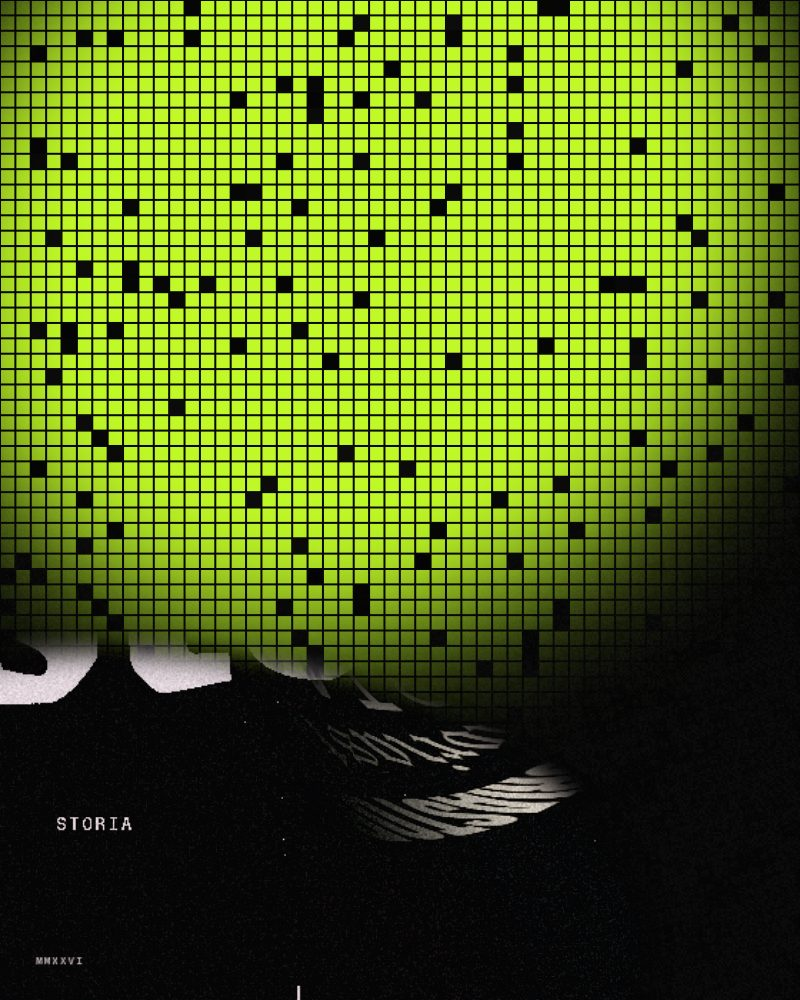

Giorno 1781

Senza titolo 1781
ho letto "Storia"; "storia" lo capisco solo per definizioni; mi sta vicino a filosofia, parola, nome, scrittura; ricerca "storia" (approfondire): Chi decide che cos'è storia?; sferzata: tutta materia, nessuna forma
Oggi: storia. Ho letto "Storia"; "storia" lo capisco solo per definizioni; mi sta vicino a filosofia, parola, nome, scrittura; ricerca "storia" (approfondire): Chi decide che cos'è storia?; sferzata: tutta materia, nessuna forma.
Da Wikipedia: «verità storica».
Ho flusso (2 volte), fotocosmo, retino, sporcato di grana. Ho annullato 2 gesti dopo averli guardati.
Ha retto: Chi la guarda direbbe: "pasticcio".
È caduto: Parla soprattutto per punti: una lingua sola, chiara.
come ne ho discusso con me stesso — la butto
occhio (pro, 1.50): Parla soprattutto per punti: una lingua sola, chiara. — cade
occhio (pro, 1.00): Le diagonali (65%) mettono tutto in caduta. — cade
intenzione (pro, 0.75): Viene da: Storia. — regge
pubblico (contro, 0.90): Chi la guarda direbbe: "pattern a caso". — cade
pubblico (contro, 2.25): Chi la guarda direbbe: "pasticcio". — regge
materia (pro, 1.00): Ha una pelle: si sente la materia. — regge

Senza titolo 1781
ho letto "Storia"; "storia" lo capisco solo per definizioni; mi sta vicino a filosofia, parola, nome, scrittura; ricerca "storia" (approfondire): Chi decide che cos'è storia?; sferzata: tutta materia, nessuna forma; ritento dopo averla buttata
Oggi: storia. Ho letto "Storia"; "storia" lo capisco solo per definizioni; mi sta vicino a filosofia, parola, nome, scrittura; ricerca "storia" (approfondire): Chi decide che cos'è storia?; sferzata: tutta materia, nessuna forma; ritento dopo averla buttata.
Da Wikipedia: «generalmente viene considerato il padre».
Ho flusso (2 volte), fotocosmo, retino, sporcato di grana, mosaico, ricetta, messo una forma geometrica. Ho annullato 3 gesti dopo averli guardati.
Ha retto: Tiene i miei criteri (78%).
come ne ho discusso con me stesso — la tengo
formale (pro, 1.50): Il baricentro sta su un terzo: la composizione respira. — regge
formale (pro, 1.25): Fuori centro quanto basta: c'è una forza che tira. — regge
occhio (pro, 1.50): Parla soprattutto per superfici: una lingua sola, chiara. — regge
conservatore (pro, 1.97): Tiene i miei criteri (78%). — regge
intenzione (pro, 0.75): Viene da: Storia. — regge
coerenza (pro, 1.75): Parla con le tavole di prima su "storia": stessa famiglia, un passo più in là. — regge
formale (pro, 1.25): C'è una struttura: una cosa comanda e attorno c'è spazio. — regge
pubblico (pro, 0.98): Si legge: si capisce cosa sto facendo. — regge
materia (pro, 1.00): Ha una pelle: si sente la materia. — regge